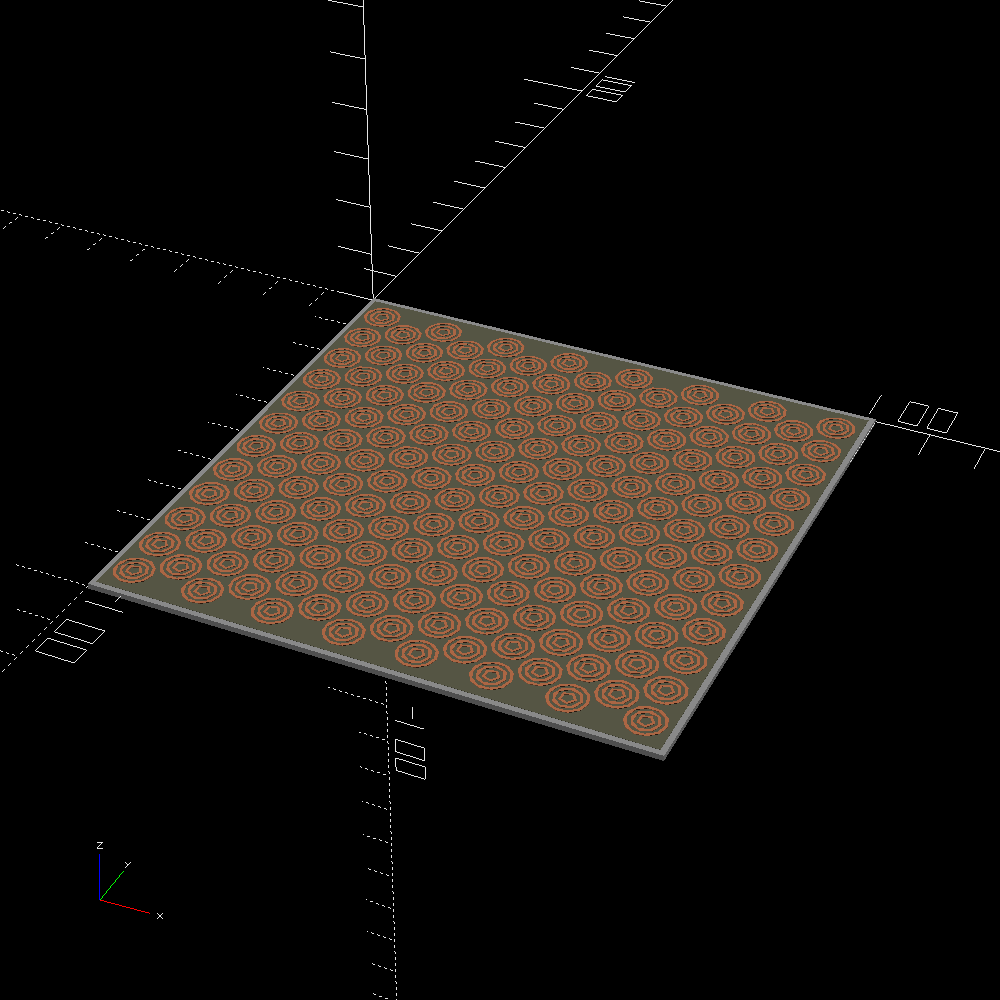

link to this page
Felicity Techtree: Microwave Phased Arrays
 Microwave Phased Arrays, as used in the Felicity tech tree, allow ≈86.6% conversion both ways between electrical power and directed microwave radiation.
They are produced with Ion Beam Printing.
Microwave Phased Arrays, as used in the Felicity tech tree, allow ≈86.6% conversion both ways between electrical power and directed microwave radiation.
They are produced with Ion Beam Printing.
They are most commonly used in concentrated solar arrays, which otherwise cannot transmit their power to rotating habitats due to the rotation forbidding a physical connection.
They can also be used for communication, typically at 5 milliwatts or less, with even a single tile allowing 2.3E+10 bit/s bandwidth within 100m range at that signal strength, dropping off with the inverse of distance past that range.
Using the phased array at its full rated 50 watts for communication is not compatible with radiocommunication regulations in most populated areas, but can easily extend the full bandwidth range by 100× up to 10km.
Standard phased array tile

A tile sized 10cm by 10cm is used as a basic building block for the collectors of larger phased arrays.
The tile includes an ion-beam-printed gallium arsenide circuit with 173 copper ring antennas.
The tile can coordinate with nearby tiles to form one larger phased array, for which all the logic is already hardware-programmed into the gallium arsenide circuitry.
A single tile is only rated for 50 watts of incoming power [*], corresponding to about 6.8 watts of heating due to inefficiencies, but from empirical testing it can actually handle 500 watts just fine as long as active cooling is provided (below the rated 50 watts, inefficiency heating is easily balanced by cooling from passive thermal radiation).
It is notable that when used as a power receiver, the process is active, unlike a passive rectenna, meaning that if the receiver malfunctions while receiving power above its rated 50W input, it can fail destructively.
When operating above the rated power, it is critical to have enough spare battery capacity or enough electrical loads to sink all of the power produced.
If the receiver is handling significantly more than 50 watts of incoming microwave power and cannot sink the produced electrical power into a load, gallium arsenide logic circuitry managing the ring antennas will be destroyed and the whole tile will need to be replaced.
[*] When used as a power emitter, 50 watts of incoming electrical power is converted into 43.3W of outgoing microwave power, and when used as a receiver, 50 watts of incoming microwave power is converted into 43.3W of outgoing electrical power.
End to end transmission incurs the loss twice so 50 watts electrical converted to microwaves and then back to electricity yields 37.5 watts electrical - almost exactly 25% power loss.
Range characteristics
The size of the emitter is the primary variable that determines the transmission range and size of the receiver.
Frequency is pre-determined as 5.8GHz, as such the diameter of the transmitter and the distance to the receiver are the two significant remaining variables directly determining how small of a spot the microwaves can be focused to.
The general formula for this relationship is: d = 1.2×0.052m×T/D
- d is diameter of the spot the microwaves can be focussed onto
- T is distance to the target
- D is diameter of the transmitter
Below is a table with size of transmitter on the left and distance to target on top, showing resulting spot size.
emitter
size | distance to target |
|---|
| 10m | 100m | 1km | 10km | 100km | 1Mm |
| 10m | 6.24cm | 62.4cm | 6.24m | 62.4m | 624m | 6.24km |
| 20m | - | 31.2cm | 3.12m | 31.2m | 312m | 3.12km |
| 50m | - | 12.48cm | 1.248m | 12.48m | 124.8m | 1.248km |
| 100m | - | - | 62.4cm | 6.24m | 62.4m | 624m |
| 200m | - | - | 31.2cm | 3.12m | 31.2m | 312m |
| 500m | - | - | 12.48cm | 1.248m | 12.48m | 124.8m |
| 1km | - | - | - | 62.4cm | 6.24m | 62.4m |